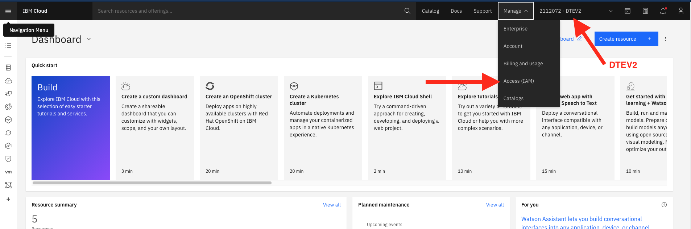

Computer Setup
Follow the instructions on this page, in order from top to bottom.
Prepare accounts
You will need an account at each of the following services.
- GitHub
- post your GitHub username in the Slack channel once you are done
- Quay Container Registry
- Trello (Login with your IBM W3ID)
Accept the team invitation
After you post your GitHub username in slack, the instructors will invite you to the team. The invite is not automatic.
After the invitation is sent, you can accept the team invitation by visiting https://github.com/cloud-native-garage-method-cohort
Windows
Complete Windows setup instructions and then continue at the "Automatic Install Script" section on the Ubuntu side.
Mac and Linux
Follow the instructions below.
Automatic Install Script
Execute the following script in your terminal:
sh -c "$(curl -fsSL https://raw.githubusercontent.com/upslopeio/ibm-cloud-garage-training/main/computer-setup/apac-emea/setup-mac-linux.sh)"
It is safe to run this script multiple times. It will not re-install the tools if they are installed already. Running the script on a computer with all the tools already installed will complete very quickly, and you will see: You can move on to the next setup step!.
If you see any error or experience any problems, have a look at the Common Issues section below.
When you are done, post the logged results in the Slack channel thread for the instructor to inspect. Here you can find a (rather healthy) example of the results to post. Post the result in any case – even if your output has errors.
Then, continue with Get an IBM Cloud API Key.
Common Issues
IMPORTANT: Run the setup script again after executing any of the below actions.
- command not found error
- run setup script again (multiple times if necessary)
- docker deamon connect error
- start Docker desktop app
- docker command not found
- start Docker desktop app
- confirm privileged access
- nvm: command not found
- install nvm manually:
curl -o- https://raw.githubusercontent.com/nvm-sh/nvm/v0.38.0/install.sh | bash - restart the terminal
- install nvm manually:
Connect to GitHub with SSH
Follow the instructions for Connecting to GitHub with SSH
Get an IBM Cloud API Key
- Accept your invitation to the
ITZ-V2,DTETECHorDTESQUADaccount (in your email)
- Log into https://cloud.ibm.com with your IBM email address
- ‼️ Make sure that
ITZ-V2,DTETECHorDTESQUADis selected from the account menu (See below) - Click on Manage > Access (IAM)
- Under "My IBM Cloud API keys" click "View all"
- Click "Create an IBM Cloud API key"
- Enter a name and create the key
- Download the key to your computer (if you don't, you'll have to create another one)



Login to ibmcloud cli
In order to test that your account works, login using your API key.
Replace YOUR_API_KEY with your actual API key and then run this command:
ibmcloud login --apikey <your-api-key> -r us-south
Run ibmcloud ks clusters to see the list of clusters you can access.
NOTE: if you are following these instructions before class starts, the cluster list might be empty, and that's OK.
You should see your cohort's cluster in the list.
If you don't, it could be because:
- It's before class started, and we haven't created it yet
- You created your API key in the wrong account (your personal account, as opposed to
ITZ-V2,DTETECHorDTESQUAD) - You have not been granted access to the cluster - contact your instructor
Access the OpenShift Cluster
In order to login to the cluster from the command line, you must first log in on the website.
- Log into https://cloud.ibm.com with your IBM email address
- Make sure that
ITZ-V2,DTETECHorDTESQUADis selected from the account menu - Under "Resource Summary" click "Clusters"
- Click your cohort's cluster
- Click "OpenShift Web Console"
- You should see the OpenShift web console


Configure ICC - fast cluster switcher
- The automatic setup script downloads
iccand saves it in~/.local/bin. Make sure it is there, if not, run the script again. - Run
source ~/.zshrcto update the path of the current terminal. - Run
icc --add-account- if icc is not found, run the script again and start over at step 1. - name the account
garage - Paste in the API key you generated above
- Run
icc --generate
When you run icc you should see at least one cluster listed (the cluster for your cohort).
When you run icc <cluster name> you should not see an error message.
When you run oc console you should see the OpenShift Web Console popping up in a new browser tab (this can take up to 10 seconds).
Visual Studio Code auto save

WebEx
If you haven't already, Download Webex Meetings
Tools
Congratulations! You now have the following tools setup and ready to use: